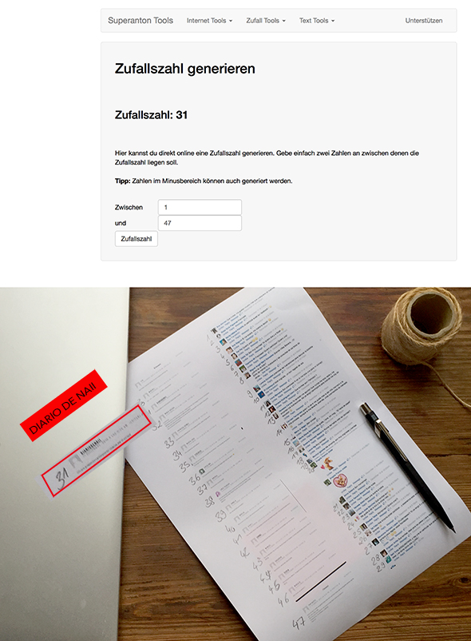
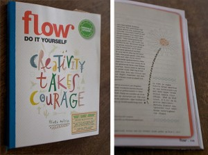
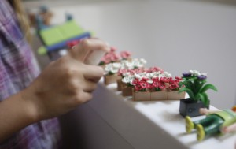

Pinterest
Instagram
ES
EN
DE
☰ Menü
Home
Das Haus
Zubehör
Dekoration
Faltanleitung
Illustration
Trinkflaschen
Bastelheft
App
Blog
Feste
Weihnachten
Ostern
Halloween
Fasching & Kostüme
Valentinstag
Geburtstag
Mutter-/Vatertag
Schulanfang
Jahreszeiten
Frühling
Sommer
Herbst
Winter
Was machen
Spielzeug
Spiele
Druckvorlagen
Essen & Rezepte
Dekoration
Malen
Experimente
Draußen
Lernen
Tiere
Geschenke & Schmuck
Bauen & Tricks
Weitere Ideen
Material
Papier
Karton
Papierrollen
Recycling
Steine
Blätter & Natur
Stoff & Nähen
Start
›
Blog
›
Ohne Kategorie
Ohne Kategorie
Kategorie
Ohne Kategorie
#1motivomilrazones
Ohne Kategorie
… und die Gewinnerin ist: El diario de Naii

Ohne Kategorie
Wir sind im Flow-Magazin

Ohne Kategorie
Eine Million Besuche!
Ohne Kategorie
Neuigkeiten: ein neuer Job
Ohne Kategorie
Knet-Experten
Ohne Kategorie
Das Häuschen: Detail 2
Ohne Kategorie
Washi-Tape-Bilder an der Wand
Ohne Kategorie
Frühlingskekse
Ohne Kategorie
Ameisen beobachten
Ohne Kategorie
Über 2000 Likes!
Ohne Kategorie
Hunde
Ohne Kategorie
Duftende Blumen

Ohne Kategorie
Ein Geschenk für Draco
Ohne Kategorie
Workshop auf Deutsch in Valencia
Ohne Kategorie
Workshop in Valencia: dein Puppenhaus
Ohne Kategorie
Meine Oma hat einen Wettbewerb gewonnen!
Ohne Kategorie
Draco
Ohne Kategorie
Schmetterlingsmuscheln